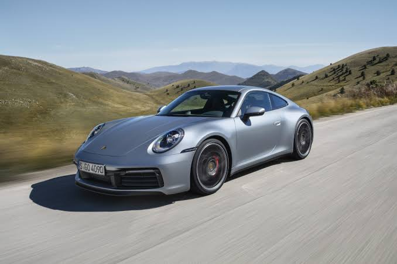

Porsche 911 — спортивный автомобиль немецкой компании Porsche, выпускаемый с 1964 года. Модель была показана в 1963 году на автосалоне во Франкфурте под обозначением 901. Название изменили на 911 из-за претензий Peugeot, зарезервировавшей за собой трёхзначные номера с нулём посередине.
Автомобиль разработан под руководством Фердинанда Александра Порше. Первые модели получили оппозитный шестицилиндровый двигатель объёмом 2,0 литра мощностью 130 л.с., расположенный сзади. Эта компоновка сохраняется на протяжении всей истории модели.
Автомобиль выпускается в Штутгарте, в районе Цуффенхаузен. Актуальное поколение 992 с 3-литровым битурбо-мотором мощностью 385 л.с. в версии Carrera представлено в 2018 году.